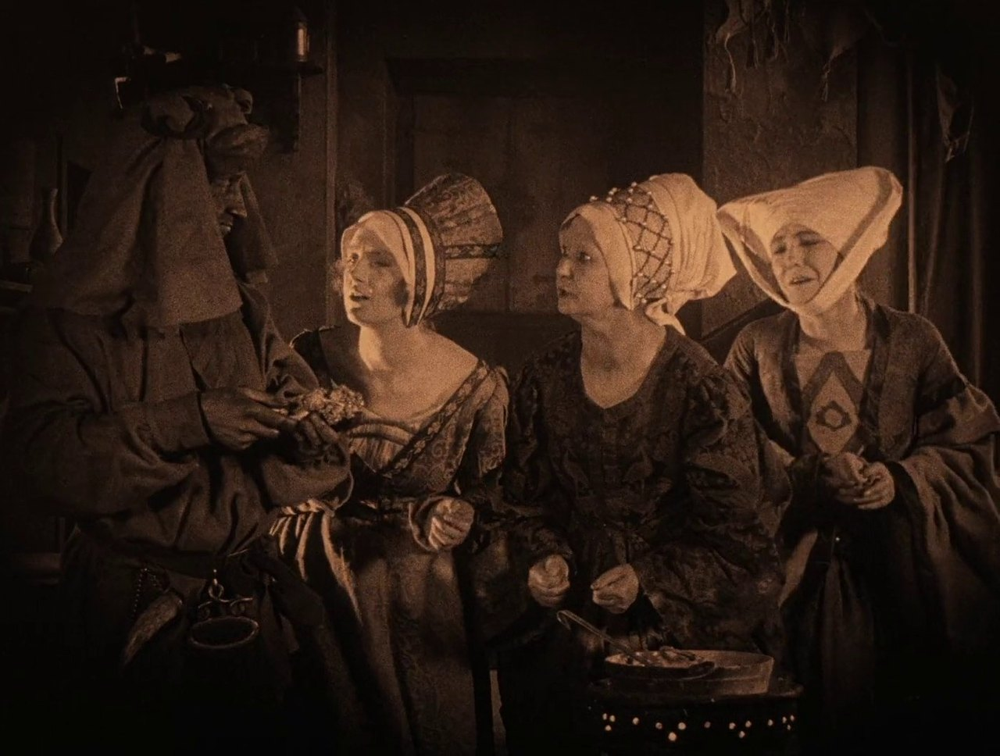

Häxan, frame at 38:00
Benjamin Christensen · 1922 · Silent film, tinted in this copy (frame)
Free to use
Benjamin Christensen found a copy of the Malleus Maleficarum in a Berlin bookshop and spent two years studying manuals, illustrations and treatises on witches before he filmed. He bought and refurbished the Astra studio in Hellerup, Denmark, and shot there from February to October 1921, only at night or on a closed set. At up to two million kronor it was the most expensive Scandinavian silent film ever made. Christensen also played the Devil.